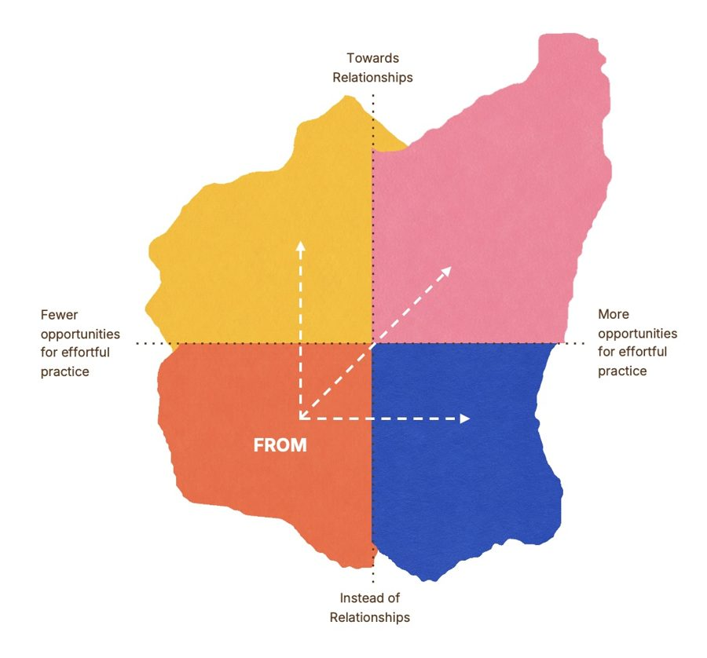

Developmental by Design
Bridging developmental science and the design of AI
Abstract
The same AI tool can have very different developmental effects on learners of the same age. An AI companion that answers every question may crowd out relationships for a preschooler surrounded by supportive teachers, yet help a child who does not speak the local language connect with the adults around them. HCI is practiced at asking whether AI systems are usable, trusted, or fair, but less practiced at asking whether using them leaves people more capable, or takes over the effort that would have made them so.
This workshop brings developmental science to the design and evaluation of AI for learning across the lifespan. Participants bring one real project and critique it with the Developmental by Design framework: a map with two axes, opportunities for effortful practice and movement toward relationships, plus six design practices used as critique lenses. Together we will build a shared vocabulary for the developmental impacts of generative AI and set a research agenda for designing technology that supports human development.
Keep the loop human, then work out where AI fits
We are practiced at asking whether an AI system is usable, trusted, fair, or harmful. We are much less practiced at asking whether using it leaves someone more capable than it found them, or takes over the work that would have made them so.
The standing advice is to keep a human in the loop, implying that the loop belongs to something else, and the person is a checkpoint trying to manage the system. We think it should be the other way around: keep the loop human, then work out where AI fits. That inversion is a design question before it is an ethical one, and it is the question this workshop is organized around.
It resists a yes-or-no answer. Whether a system grows a capacity or stands in for the effort that would have grown it depends on:
- For whatWhich capacity, named narrowly enough to recognize it happening in front of you.
- For whomWhich learner, and what they can already do without help.
- WhenWhere they sit in their own development right now.
- HowA hint or an answer, before their own attempt or after it, chosen or imposed.
- In what contextThe classroom, the home, the setting and what it already provides.
- In place of whatWhat would have happened there without it.
Developmental science has well-replicated accounts of what is forming at a given point in life and what builds it: how early reading comes together, how metacognition is assembled from noticing one's own errors, how identity is worked out in adolescence, how expertise is built through repeated deliberate practice. Much of the research on AI and learning is a few years old, concentrated in a few settings and weighted toward adults. It rarely draws on developmental science, and developmental science rarely reaches the design decisions where it would change what gets built.
This is a gap between two literatures and between research and practice. CHI 2027's theme of bridges names these divides, and this workshop is interdisciplinary in the strict sense: it cannot be done by developmental scientists or by system designers alone.
The framework: one map, six practices

Something is better for human development when it gives people opportunities for effortful practice of what they are developing, and moves them toward other people rather than taking their place. Those are the map's two axes.
You place a learner where they are today, then again where they would be with the design in place. The map shows the change a design makes, not the design on its own. The top right is the development zone; any intentional move toward it is being developmental by design.
The framework comes out of the Compass Collaborative at the Harvard Graduate School of Education. Six design practices underpin the map. A practice is something you get better at rather than something you finish, and we believe these six belong in the toolkit of anyone designing or governing AI. In this workshop, each becomes a critique lens: a question to ask of a design.
The six design practices
- Design in particularsFor what, for whom, when, how, in what context, and in place of what?
- Protect the struggleWhere is the hard part where the learning happens, and how much of it stays with the learner? Where does their own attempt belong?
- See what AI makes possibleWhich separate things does AI offer here — instant answers, endless variation, patience, holding a role, arguing a side, patterns across more work than a person could read — and what could each make possible for this learner?
- Design toward relationshipsWhere does this send the learner back to a teacher, a peer, a parent? Who hears their questions now?
- Look without the toolHow does this work happen today, how do learners here get good at it, and what can they do when the design is switched off?
- Notice what isn't thereWhat work has the design taken over, who used to learn on that work, and who else does the change reach two or three steps out?
Three goals for the workshop
-
1
Bridge HCI and the developmental sciences
Apply a developmental lens to designing and evaluating AI. The opportunities and challenges of AI can only be understood through multidisciplinary research and connections between research and practice. The framework is an entry point for three big questions:
Capacity or substitution
When does AI assistance build the capacity it touches, and when does it stand in for the effort that would have built it?
The same tool, different developing minds
How should a design change for a five-year-old, a fifteen-year-old, a new employee, or an expert? What does a system need to know about where someone is in their development, and what should it do with that knowledge?
Toward people, not in their place
When should a system hand someone back to a teacher, a peer, a parent or a colleague? How do emerging workers build expertise and the pattern recognition needed when the foundational work that built it is disappearing?
-
2
Build a shared vocabulary
Through this exploration and dialogue, build and test a shared vocabulary for evaluating the developmental impacts of generative AI, so that design critique can go further than "be careful with AI."
-
3
Set a research agenda
Identify a research agenda that prioritizes big questions surfaced by participants who are committed to shaping technology to support human development, and push this field forward.
Format: two sessions, one real project
In person, as two sessions of 75–90 minutes each, with one break in between.
Session 1
- Developmental by Design introductionThe map and six design practices, tried out in small groups on a real system.
- Real-world applicationDefine your audience and developmental goals, place your design on the map, and find what would move it toward development.
Session 2
- Collaborative critiqueIn groups mixed across sectors, critique each other's projects using the map and practices.
- Redesign commitmentWrite the one change you will make to your project.
- Reflection and future researchWhere the framework helped, where it broke down, and the big questions still open.
Call for participation
Who should join
Designers, engineers, researchers, educators, and learning and policy leaders who are building, studying or teaching with AI that reaches learners — from early childhood through higher education and the workplace. Any career stage is welcome. No background in developmental science is needed, and work in progress is encouraged.
What to submit
A 2–4 page position paper on one AI product, lesson, research intervention or policy you are working on. Use the single-column ACM template. Papers are not anonymized.
After acceptance
We'll group accepted participants by learner age group and share each group's one-page overviews before the workshop. One author of each accepted paper must attend in person.
Publishing
Accepted papers are non-archival and will be posted on this website. Afterward, we will publish a synthesis of the workshop's contributions on CEUR-WS or arXiv.
Submit your paper
Submission opens after acceptanceWe expect 20–40 participants.
Key dates
| Submission deadline | To be announced |
|---|---|
| Notification | To be announced |
| Workshop day | To be announced, during CHI 2027 |
| CHI 2027 | May 10–14, 2027, Pittsburgh |
All deadlines are 11:59 pm Anywhere on Earth.
Organizers
Both organizers work at the Compass Collaborative at the Harvard Graduate School of Education, where Developmental by Design was developed and taught. Both will attend in person, review submissions, and facilitate and document the discussions.
Tessa Forshaw
Faculty Chair, Workforce and Workplace Learning; Co-Director, Compass Collaborative, Harvard Graduate School of Education
A cognitive scientist, Tessa studies how people develop the cognitive and creative skills to learn, work and create alongside AI, and how emerging technologies shape learning and development. She was previously a Lecturer at Stanford's d.school and spent more than a decade at Accenture, the IDEO CoLab and People Rocket. She is the author of Innovation-ish (Wiley, 2025) and holds a Ph.D. from Harvard University.
Beth Sapire
Senior AI and Human Development Research Associate, Compass Collaborative, Harvard Graduate School of Education
Beth's research examines how generative AI can support and hinder development in adult learners. She leads the development of a chatbot that helps educators draw on developmental and AI research when deciding how to use AI. She facilitates executive education courses and was previously a consulting leader in Accenture's Talent and Organization practice.
Questions? Email bethsapire@gse.harvard.edu or tforshaw@g.harvard.edu.
References
- Bjork, R. A., & Bjork, E. L. (2011). Making things hard on yourself, but in a good way: Creating desirable difficulties to enhance learning.
- Bronfenbrenner, U. (1979). The Ecology of Human Development.
- Buçinca, Z., Malaya, M. B., & Gajos, K. Z. (2021). To trust or to think: Cognitive forcing functions can reduce overreliance on AI.
- Chi, M. T. H., & Wylie, R. (2014). The ICAP framework.
- Collins, A., Brown, J. S., & Newman, S. E. (1989). Cognitive apprenticeship.
- Ehri, L. C. (1995). Phases of development in learning to read words by sight.
- Ericsson, K. A., Krampe, R. T., & Tesch-Römer, C. (1993). The role of deliberate practice in the acquisition of expert performance.
- Flavell, J. H. (1979). Metacognition and cognitive monitoring.
- Friedman, B., Kahn, P. H., & Borning, A. (2006). Value sensitive design and information systems.
- Hirsh-Pasek, K., et al. (2015). Putting education in "educational" apps.
- Lave, J., & Wenger, E. (1991). Situated Learning.
- Marcia, J. E. (1966). Development and validation of ego-identity status.
- Risko, E. F., & Gilbert, S. J. (2016). Cognitive offloading.
- Vygotsky, L. S. (1978). Mind in Society.
- Vereschak, O., Bailly, G., & Caramiaux, B. (2021). How to evaluate trust in AI-assisted decision making? A survey of empirical methodologies.
- Shelby, R., et al. (2023). Sociotechnical harms of algorithmic systems: Scoping a taxonomy for harm reduction.
- Shneiderman, B. (2020). Human-centered artificial intelligence: Reliable, safe & trustworthy.